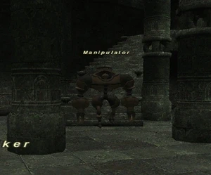

Level 75 reference · Zenith rules
|
Family: Doll Notorious Monster |
 |

| Zone | Level | Drops | Steal | Spawns |
Notes |
|---|---|---|---|---|---|
|
1 |
A, M | |||
|
HP = Detects Low HP; M = Detects Magic; Sc = Follows by Scent; T(S) = True-sight; T(H) = True-hearing JA = Detects job abilities; WS = Detects weaponskills; Z(D) = Asleep in Daytime; Z(N) = Asleep at Nighttime | |||||

 Image source
Image source
Notes
- Located around (I-10) - (J-10)
- Respawns approximately every 2 hours
- Killable by 4 level 70 players; Soloable by most jobs at level 75, with difficulty or time.
- Killable easily by any DD with /nin. Extremely easy for any 75 Ninja or Thief or War. (Or alike) Within around 5-10 Minutes.
- Gives 21-27 exp to a 75 Thief with NPC out.
Adapted from Eden Wiki: Manipulator · Contributors and history · CC BY-SA 4.0. Revision 44924. Layout, links and optional background text adapted for Zenith.